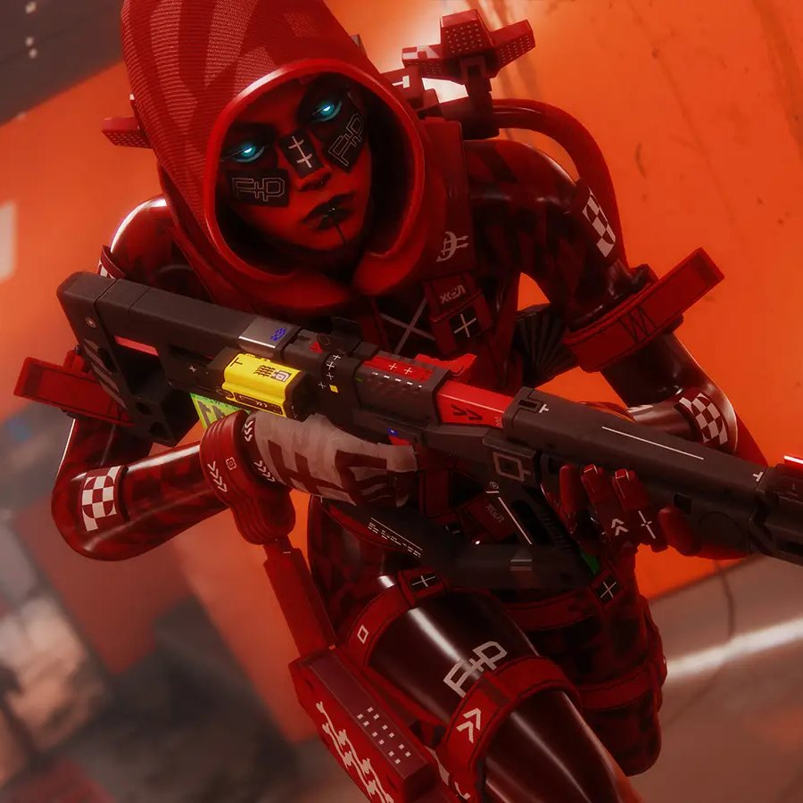
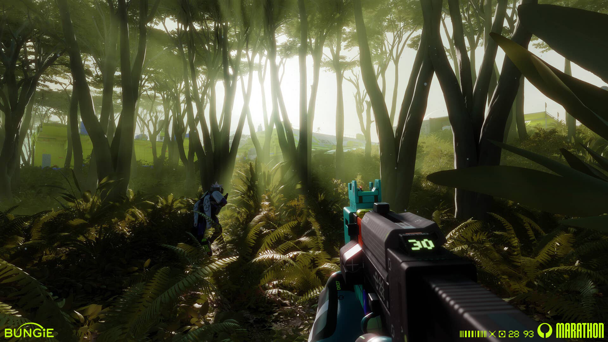
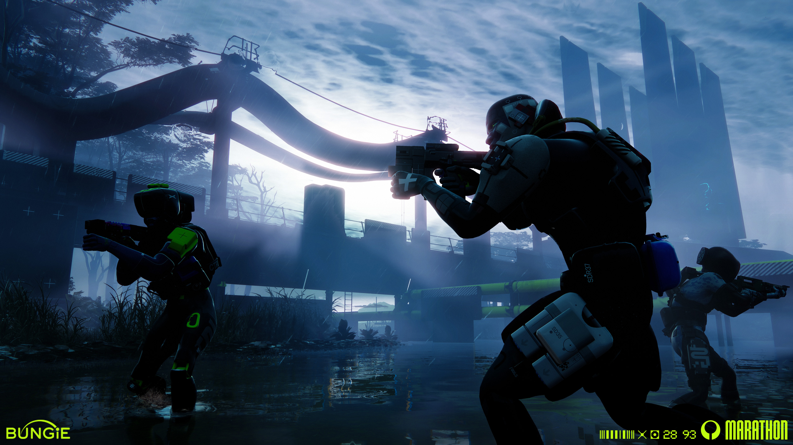

03. CORE MECHANIC
MẬT ĐỘ NGƯỜI CHƠI
Mỗi zone chứa tối đa 18 người chơi. Quy mô này đảm bảo nhịp độ chạm trán căng thẳng vừa đủ giữa các đội Runner mà vẫn giữ được không gian khám phá chiến thuật.
RUNNER SHELL
Shell (Runner shell) được biết đến là những thân thể sinh – tổng hợp mà những người chơi (Runner) chuyển ý thức của mình vào trong đó để điều khiển khám phá Tau Ceti IV. Nó không chỉ đóng vai trò như một lớp skin trang trí thông thường, ở đó, mỗi shell đều có những kỹ năng và trang bị khác nhau, phù hợp với từng nhân vật mà người chơi điều khiển.
RỦI RO & THÀNH QUẢ
Người chơi khi không thể thoát ra thành công sẽ không thể lấy lại những vật phẩm đã lấy trước đó. Ngược lại, khi rút lui khỏi nhiệm vụ thành công, những vật phẩm mang ra được sẽ được sử dụng cho những trận đấu kế tiếp.
[01] CORE GAMEPLAY LOOP – VÒNG LẶP GAMEPLAY CỐT LÕI
GENRE: PvPvE EXTRACTION SHOOTERGameplay của Marathon xoay quanh thể loại PvPvE Extraction Shooter. Người chơi điều khiển Runner tiến vào các khu vực trên Tau Ceti IV, thu thập tài nguyên, thực hiện nhiệm vụ và tìm cách rút lui an toàn.
RISK VS. REWARD
Mỗi chuyến thám hiểm đặt người chơi trước sự lựa chọn giữa việc tiếp tục tìm kiếm phần thưởng có giá trị cao và rút lui để bảo toàn những gì đã thu thập được.

[02] PLAYER MOVEMENT – HỆ THỐNG DI CHUYỂN
VIEW: FIRST-PERSON 3D ENVIRONMENTNgười chơi điều khiển Runner trong môi trường 3D với góc nhìn thứ nhất.
CÁC HOẠT ĐỘNG DI CHUYỂN CHÍNH:
- Di chuyển qua các khu vực trên bản đồ.
- Quan sát môi trường và xác định hướng đi.
- Sử dụng địa hình và công trình để lựa chọn tuyến đường.
- Tiếp cận khu vực nhiệm vụ và điểm chứa tài nguyên.
- Điều chỉnh vị trí trong giao tranh.
- Di chuyển đến điểm extraction khi cần rút lui.


[03] RUNNER SHELL SYSTEM – HỆ THỐNG NHÂN VẬT
SYSTEM: MODULAR CYBERNETIC SHELLS
Runner Shell là các cơ thể nhân tạo mà người chơi sử dụng để tham gia trận đấu. Mỗi loại Shell có năng lực và đặc điểm riêng, tạo nên những phong cách gameplay khác nhau.
Hệ thống này cho phép người chơi lựa chọn cách tiếp cận dựa trên vai trò và sở thích.
CÁC YẾU TỐ GAMEPLAY:
Năng lực đặc trưng của từng Shell.
Khả năng hỗ trợ bản thân hoặc đồng đội.
Sự kết hợp giữa Shell, vũ khí và trang bị.
Lựa chọn chiến thuật phù hợp với mục tiêu chuyến đi.
Việc lựa chọn Shell ảnh hưởng đến cách người chơi khám phá, chiến đấu và phối hợp với nhóm.
3.1 TỔNG QUAN VỀ CÁC SHELL TRONG GAME
Truy cập hồ sơ dữ liệu chi tiết về thông số kỹ thuật, bộ kỹ năng riêng biệt và vai trò chiến thuật của từng lớp Runner Shell trong Marathon.